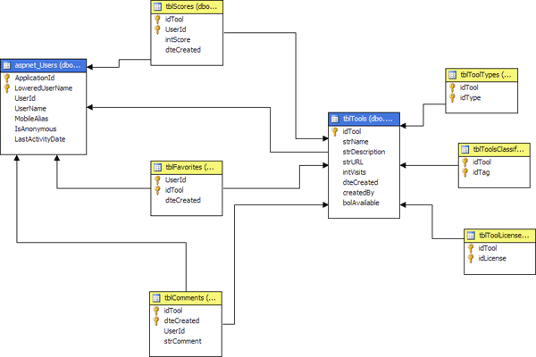

Cubo la Base de Datos en SQL
De acuerdo a la Wikipedia:
Un cubo OLAP (OnLine Analytical Processing o procesamiento Analítico en Línea), término acuñado por Edgar Frank Codd [...] es una base de datos multidimensional, en la cual el almacenamiento físico de los datos se realiza en un vector multidimensional. Los cubos OLAP se pueden considerar como una ampliación de las dos dimensiones de una hoja de cálculo.
La propuesta de Codd consistía en realizar una disposición de los datos en vectores para permitir un análisis rápido. Estos vectores son llamados cubos. Disponer los datos en cubos evita una limitación de las bases de datos relacionales, que no son muy adecuadas para el análisis de instantáneas de grandes cantidades de datos. Las bases de datos relacionales son más adecuados para registrar datos provenientes de transacciones (conocido como OLTP o procesamiento de transacciones en línea). Aunque existen muchas herramientas de generación de informes para bases de datos relacionales, éstas son lentas cuando debe explorarse toda la base de datos.
Gracias a Microsoft SQL Server 2008 se planea generar el siguiente Cubo para coolpilation.com, basado en un diseño estrella donde los usuarios y las herramientas son las dimensiones:

Volver a Base de Datos...